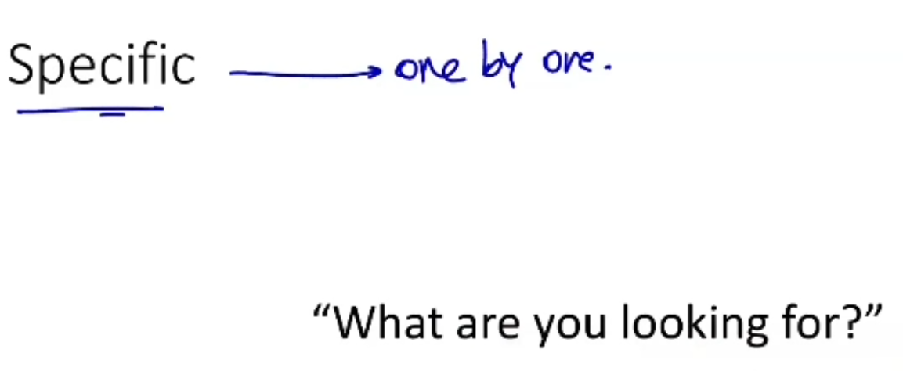
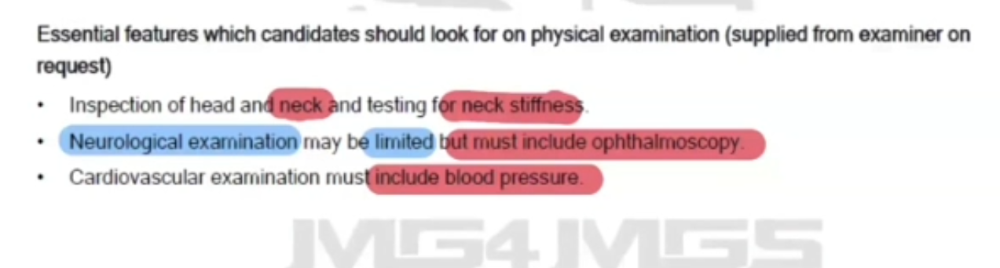
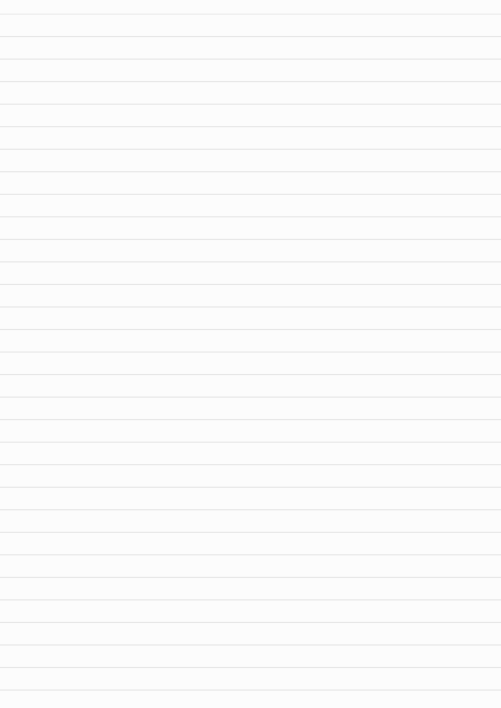
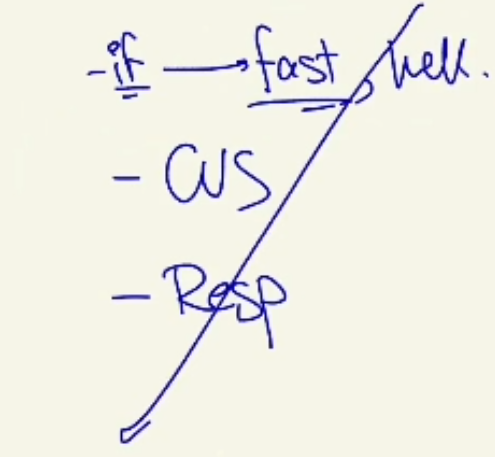

Approach to Headache - Physical Examination Findings (PEFE)
Source: Dr. Amir workshop — Med workshop 2 - 2026 / CLASS 1 HEADACHE (Aug 2026 drop) · Specialty: neurology
Overview and Red-Flag Examination Findings
In a headache station the examination is driven by the differential. Any headache patient with a neurological deficit signals a problem. Red-flag examination findings to actively seek:
- Drowsiness or cognitive impairment.
- Features of meningism — neck stiffness, Brudzinski sign, Kernig sign.
- Abnormal vital signs.
- Focal neurological signs.
- Tender, poorly pulsatile temporal artery (temporal arteritis).
- Papilloedema — often the only externally visible sign of an intracranial problem; AMC frequently provides papilloedema on the PE card when a brain tumour is intended.
When requesting a system, be specific and name what you are looking for (the examiner will otherwise ask "what are you looking for?"), and ask one component at a time.
Structure of the Headache Examination
- General appearance (mnemonic PRICCLED — Pallor, Rash, Icterus, Cyanosis, Clubbing, Lymphadenopathy, Edema, Dehydration). Relevant items: level of consciousness (alert vs drowsy), rashes (shingles, meningitis), ptosis.
- Vital signs — especially blood pressure and temperature (temperature for infection). Re-ask here if not obtained at the start.
- Core examination: neurological examination (the main step).
- Other relevant systems: ENT (throat for sinusitis, mouth for dental) and neck examination.
If time allows and you are a fast role-player, add a quick respiratory examination (equal air entry, added sounds) and cardiovascular examination (normal S1/S2, murmurs/added sounds); the abdomen is skipped.
Neurological Examination
Cranial nerves: state you would perform a cranial nerve examination (usually reported normal), then specifically request fundoscopy. Also check pupils (symmetry, light reflex) and eye movements; the trigeminal (5th) nerve sensation and motor branches (relevant to trigeminal neuralgia); and facial (7th) nerve movements.
Upper and lower limbs: power of the myotomes, sensation of the dermatomes, and reflexes (asymmetry, hypo- or hyper-reflexia). Tone, inspection and coordination may be omitted for time.
Eye examination is largely covered within the neurological examination; office visual-acuity testing is generally not relevant — focus on pupils, fundoscopy and eye movements.
ENT and Cervical Spine Examination
ENT: sinus tenderness; dental examination (cavities, caries, gum redness/swelling); throat for post-nasal drip. Otitis media, pharyngitis and tonsillitis may be omitted for time.
Cervical spine: palpate the spinous processes and para-spinal muscles for tenderness, and assess pain on neck movement.
Directed Examination by Provisional Diagnosis
If meningitis (headache, acute fever, nausea, photophobia in a young patient): neck stiffness, Brudzinski sign and Kernig sign — all three positive in a meningitis case.
If temporal arteritis: palpate the temporal region for tenderness, and check for proximal myopathy (related to polymyalgia rheumatica). Eye examination is the most important step because the key complication is visual loss.
Case Figures











🔬 Expert Review & Enhancements
Reviewed by: history-taking-expert (Australian clinical supervisor) · fact-checked against the irStudy medical textbook RAG index.
✏️ Corrections
Use Australian spelling (oedema) and the correct eponyms Brudzinski sign and Kernig sign. Note that Kernig/Brudzinski have low sensitivity for meningitis in adults - their absence does not exclude meningitis, so a low threshold for lumbar puncture and empirical ceftriaxone (per eTG) remains essential.
⭐ Suggested Enhancements
🏷️ Metadata
📚 Reference Citations (RAG)
OXFORD HANDBOOK OF EMERGENCY MEDICINE 5TH EDITION (2020).pdf p.365 (p384) qdrant:30e4f76f-68e8-4885-b2eb-023fd9dd87c9
John Murtagh General Practice, 8th Edition.pdf p.p2507 (Table 93.3) qdrant:cebe63ce-2afb-4f9d-a96d-a28d3de4050a
John Murtagh General Practice, 8th Edition.pdf p.80 (p229) qdrant:c4c0c7c3-11ce-41ad-b015-a13ca14f48ba